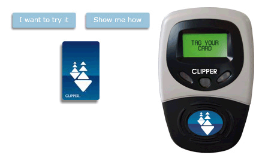

How to use Clipper
To use your Clipper card, locate the Clipper card reader at the entrance of the transit vehicle, fare gates or station and hold your card flat against the Clipper logo until you hear a beep or the gates open. The card reader will also show the cash balance remaining on your card, the expiration date of your pass, or remaining rides.
For BART, Caltrain, Golden Gate Transit, Marin Transit, SF Bay Ferry, SMART and Sonoma County Transit: Fares for these agencies are based on distance or zones, and you must tag your card to the card readers upon entering and exiting. This ensures that you are only charged for the distance or zones you've traveled and that Clipper applies any appropriate transfers or discounts.

If you need to check your balance or card usage history, log into your My Clipper account and click on "Check card value" or "Check card activity". You also can contact Customer Service at 877.878.8883, TDD/TTY 711 or 800.735.2929, or you can check your current card balance while using your card (the balance will display when you tag your card to a card reader), at a self-serve Add Value Machines or at a retail location.
To keep your balance secure, register your card online or by calling the Customer Service Center at 877.878.8883. If you ordered your card online or over the phone, or if you have a youth or senior Clipper card, it is already registered. Once your card is registered, if it is ever lost or stolen, your card and the remaining balance can be replaced for a small fee.
You can also visit one of our In–Person Customer Service Centers to replace a damaged or defective card, add value to your card with a transit benefit debit card, or apply for and receive a Senior or Youth Clipper card.